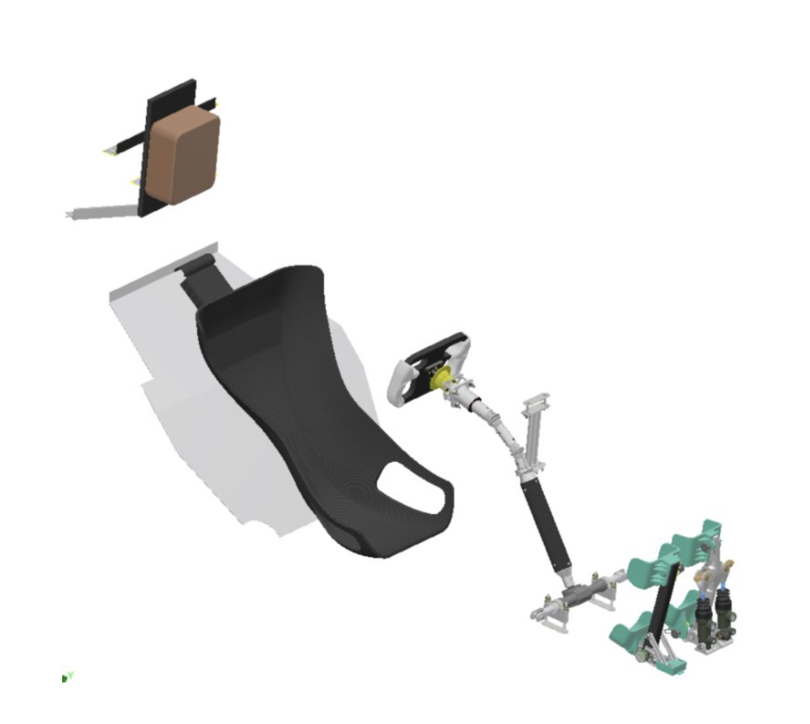

00
Ergonomics Subteam Lead, ARG27
Leading driver-interface systems for the 2027 competition carSubteam Lead
ERGONOMICS · CORNELL RACING FSAE
5th–95th
PERCENTILE DRIVER FIT
ARG27
2027 CAR
I lead the Ergonomics subteam, which covers everything the driver touches. This year I'm also designing the seat, firewall, and head restraint myself.

ARG26 ERGONOMICS ASSEMBLYAS SUBTEAM LEAD
Overseeing steering, the wheel, and pedals
Guiding the designers on each system, with stiffness and weight targets backed by FEA and component testing.
DESIGNING THIS YEAR
Seat, firewall, and head restraint
My own parts for ARG27, fit to every driver on the team through the mockup program.
Goals This Season
- Real adjustability across the full driver range, with fast swaps during endurance
- Test every sensor before competition, since our steering position sensors failed at competition last season
- Weight cut wherever it's safe, with data to prove it
- Safety-critical items like harness pullout testing done early, not at the deadline